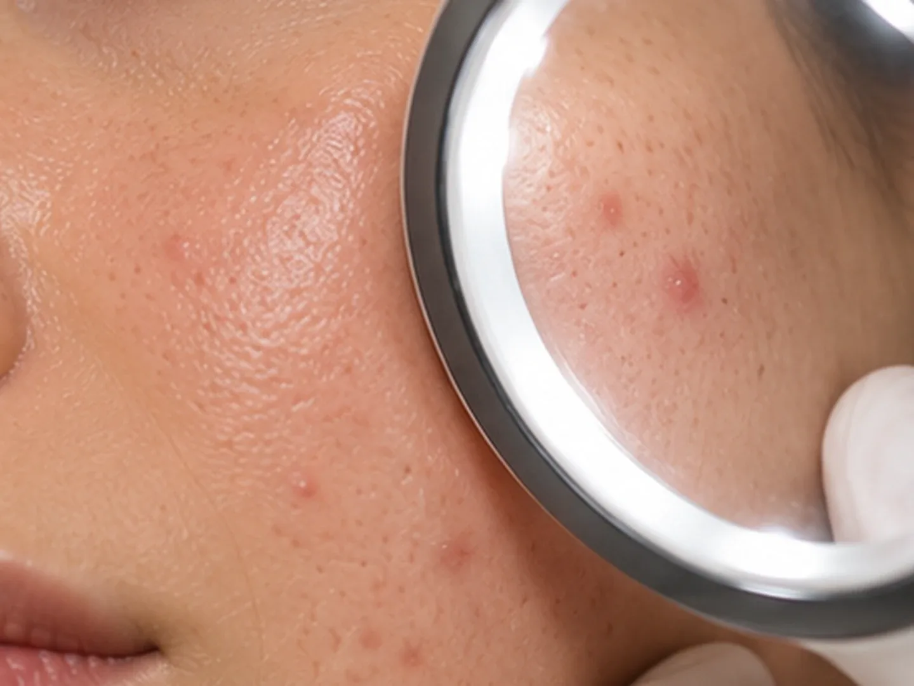

БояринцеваЮлия Игоревна
Врач-дерматовенеролог-косметолог
Диагностика и лечение заболеваний кожи, практическая, клиническая и аппаратная косметология
- Опыт
- 17 лет
Кожа и внешность
Лечение акне и постакне: приём врача-дерматовенеролога-косметолога, чистки и пилинги по назначению.
Лечение акне ведёт врач-дерматовенеролог-косметолог. На первом приёме он осматривает кожу, выясняет причины высыпаний и составляет план: домашний уход, процедуры, при необходимости анализы и консультации других врачей.

Акне – воспалительное заболевание сальных желёз кожи: на лице, спине и груди появляются комедоны, красные узелки и гнойнички. Постакне называют следы, которые остаются после высыпаний: пятна, расширенные поры, рубцы. Лечение акне и постакне ведёт врач-дерматовенеролог-косметолог в клинике 8.0.8 в Москве, у метро «Римская». Записаться можно ежедневно с 9:00 до 21:00.
Прийти стоит, если прыщи на лице появляются снова и снова, высыпания болезненные и оставляют пятна, домашний уход не помогает или акне появилось во взрослом возрасте. Чем раньше начато лечение, тем меньше следов остаётся на коже.
Приём ведёт Бояринцева Юлия Игоревна. По образованию она дерматовенеролог, поэтому сначала выясняет, что происходит с кожей, и только потом предлагает процедуры. Если вы искали дерматолога в Москве при акне, это тот же приём: первичный приём врача-косметолога.
После приёма вы будете знать:
Акне возникает, когда сходятся несколько причин. Сальные железы выделяют больше кожного сала, устья пор забиваются ороговевшими клетками, и образуется комедон. В закрытой поре размножаются бактерии, и начинается воспаление. Поэтому прыщи чаще появляются там, где больше сальных желёз: на лице, спине и груди.
Связь акне с питанием изучена меньше. У части людей высыпания усиливаются от сладкого и молочных продуктов, но строгая диета без назначения врача обычно не нужна.
После воспалений на коже остаются следы, их называют постакне. С ними работают, когда новые высыпания уже под контролем: иначе свежие воспаления оставят новые следы. Лечение постакне подбирают по тому, какие именно следы на коже.
Глубокие рубцы полностью не исчезают, но их можно сделать менее заметными. Сколько процедур понадобится и какие подойдут вашей коже, врач скажет после осмотра.
При выдавливании содержимое поры уходит не только наружу, но и глубже в кожу. Воспаление расширяется, заживает дольше и чаще оставляет тёмное пятно или рубец. Через руки на кожу попадают бактерии, и рядом появляются новые высыпания.
Комедоны безопаснее убрать на чистке лица: специалист работает стерильно и знает, какие элементы можно трогать, а какие нет. Чистку лица при акне делают, когда воспаление стихло. Воспалённые узлы и гнойнички чисткой не лечат: их сначала показывают врачу.
Пилинг при акне тоже назначают не сразу. Мягкие пилинги, например миндальный и салициловый, уменьшают жирность и помогают порам очищаться. Курс и сам пилинг выбирают вместе с врачом, чтобы не раздражить кожу.
Первичный приём (осмотр, сбор анамнеза, консультация, план лечения) врача-косметолога
3 500 ₽
30 мин
ЗаписатьсяВрач-дерматовенеролог-косметолог
Диагностика и лечение заболеваний кожи, практическая, клиническая и аппаратная косметология
Первичный приём врача-косметолога стоит 3 500 ₽, повторный приём 2 000 ₽. Процедуры оплачиваются отдельно: ультразвуковая чистка лица 4 800 ₽, механическая 5 800 ₽, комбинированная 7 500 ₽, чистка спины 9 800 ₽. Карбоновый пилинг стоит 4 300 ₽, курс из 4 сеансов 14 800 ₽, химические пилинги от 5 200 ₽. Итоговая стоимость зависит от плана, который составит врач.
Позвоните по телефону +7 (938) 099-30-09 или нажмите «Записаться» на этой странице: администратор подберёт удобное время и подскажет, как подготовиться. Клиника работает ежедневно с 9:00 до 21:00. Направление не нужно.
В клинике 8.0.8: Москва, ул. Сергия Радонежского, 15–17, стр. 2, этаж 1. Рядом станции метро «Римская» и «Площадь Ильича».
Приём ведёт Бояринцева Юлия Игоревна, врач-дерматовенеролог-косметолог. В прайсе этот приём называется «первичный приём врача-косметолога».
Обычно несколько месяцев: первые изменения становятся заметны не сразу, а курс подбирают по ответу кожи. Сроки врач обсудит с вами на приёме.
Чистка убирает комедоны, но не лечит воспаление. При воспалённых высыпаниях её откладывают, а начинают с приёма врача.
Чаще всего миндальный и салициловый, а при постакне пилинг Джесснера и карбоновый пилинг. Выбор зависит от кожи: решение принимает врач.
Сначала нужно взять под контроль новые высыпания. Затем пятна выравнивают пилингами, а с рубцами и порами работают аппаратными методиками. Курс подбирают после осмотра.
Иногда да, особенно у взрослых. Если есть такие признаки, врач порекомендует анализы или консультацию эндокринолога: в клинике есть это направление.
Подобрать домашние средства для проблемной кожи можно на приёме врача или на отдельной консультации по подбору космецевтики (2 000 ₽).
Имеются противопоказания. Необходима консультация специалиста.